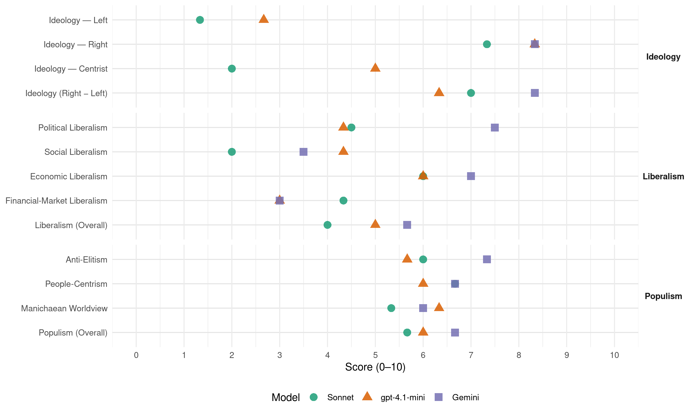

SD (Sweden, 2022)
manifesto_id 11710_202209
Get full text: This site shows derived annotations and short verbatim quotes only. The full manifesto text is © Manifesto Project / WZB — obtain it via manifesto-project.wzb.eu using the manifesto_id above.
Headline scores
| Dimension | Sonnet | gpt-4.1-mini | Gemini |
|---|---|---|---|
| Populism (Overall) | 5.7 | 6.0 | 6.7 |
| Anti-Elitism | 6.0 | 5.7 | 7.3 |
| People-Centrism | 6.7 | 6.0 | 6.7 |
| Manichaean Worldview | 5.3 | 6.3 | 6.0 |
| Ideology (Right − Left) | 7.0 | 6.3 | 8.3 |
| Liberalism (Overall) | 4.0 | 5.0 | 5.7 |
| Political Liberalism | 4.5 | 4.3 | 7.5 |
| Social Liberalism | 2.0 | 4.3 | 3.5 |
| Economic Liberalism | 6.0 | 6.0 | 7.0 |
| Financial-Market Liberalism | 4.3 | 3.0 | 3.0 |
Evidence per dimension
Economic Liberalism
Gemini · score 7.0 · verified · chunk 1
“marknadsekonomi, valfrihet inom välfärden och internationell handel”
Sverigedemokraterna ser att marknadsekonomi, valfrihet inom välfärden och internationell handel gynnar
Gemini · score 7.0 · verified · chunk 2
“äganderätten bör stärkas”
Reglerna inom skog och jord måste även ses över för fungerande avvägningar och äganderätten bör stärkas. Rättssäkerheten behöver stärkas för den som
Gemini · score 7.0 · verified · chunk 3
“fri handel mellan europeiska länder är”
Sverigedemokraterna anser att fri handel mellan europeiska länder är av stort värde för vår ekonomi
gpt-4.1-mini · score 6.0 · verified · chunk 1
“Sverigedemokraterna ser att marknadsekonomi, valfrihet inom välfärden och internationell handel gynnar samhället”
Sverigedemokraterna ser att marknadsekonomi, valfrihet inom välfärden och internationell handel gynnar samhället och är viktigt att försvara, men kan samtidigt se att stora välstånd som skapas måste komma fler till del.
gpt-4.1-mini · score 6.0 · verified · chunk 2
“Sänka skatten på diesel för jord- och skogsbruket och den allmänna löneavgiften”
Sverigedemokraterna vill sänka skatten på diesel för jord- och skogsbruket och den allmänna löneavgiften Öka den nationella finansieringen i jordbruket, för miljönytta och produktivitetsökning.
gpt-4.1-mini · score 6.0 · verified · chunk 3
“fri handel mellan europeiska länder är av stort värde för vår ekonomi”
Sverigedemokraterna anser att fri handel mellan europeiska länder är av stort värde för vår ekonomi men det finns inget behov av en mer integrerad politisk union för att åtnjuta frihandelns fördelar.
Sonnet · score 6.0 · verified · chunk 1
“marknadsekonomi, valfrihet inom välfärden och internationell handel”
Sverigedemokraterna ser att marknadsekonomi, valfrihet inom välfärden och internationell handel gynnar samhället och är viktigt att försvara
Sonnet · score 5.0 · mixed · chunk 2
“öka konkurrensen på byggmarknaden”
Nybyggnation kan underlättas genom att se över byggnormer och öka konkurrensen på byggmarknaden
Sonnet · score 6.0 · verified · chunk 3
“fri handel mellan europeiska länder är av stort värde”
Sverigedemokraterna anser att fri handel mellan europeiska länder är av stort värde för vår ekonomi men det finns inget behov av en mer integrerad politisk union.
Financial-Market Liberalism
Gemini · score 3.0 · verified · chunk 3
“Försvara kontanternas ställning som betalmedel”
Sverigedemokraterna vill: Ta fram en särskild krislagstiftning Försvara kontanternas ställning som betalmedel i Sverige Förbättra den centrala
gpt-4.1-mini · score 3.0 · verified · chunk 3
“negativt på flera planerade initiativ som ökar EU:s grepp över den ekonomiska politiken”
Vi ser mycket negativt på flera planerade initiativ som ökar EU:s grepp över den ekonomiska politiken samt på förslag på införandet av nya EU-skatter och avskaffad vetorätt inom utrikespolitiken.
Sonnet · score 5.0 · verified · chunk 1
“skatter på en nivå som inte hämmar svenska företag”
Ha skatter på en nivå som inte hämmar svenska företag i den internationella konkurrensen
Sonnet · score 5.0 · verified · chunk 2
“Säkra kronans ställning genom ett svenskt undantag”
Säkra kronans ställning genom ett svenskt undantag från deltagande i EU:s valutaunion
Sonnet · score 3.0 · verified · chunk 3
“kronans ställning måste säkras genom ett svenskt juridiskt undantag”
Även kronans ställning måste säkras genom ett svenskt juridiskt undantag från deltagande i valutasamarbetet.
Political Liberalism
Gemini · score 7.0 · verified · chunk 1
“återskapa ett rättssamhälle att lita på”
bedrivit. Att återskapa ett rättssamhälle att lita på kommer vara en
Gemini · score 8.0 · verified · chunk 2
“försvara och stärka den liberala demokratimodellen”
särskiljer den västerländska demokratimodellen från många delar av världen och har varit grundläggande för en kultur och ett samhälle i särklass. Att försvara och stärka den liberala demokratimodellen är grundläggande i en konservativ politik.
Gemini · score 4.0 · mixed · chunk 3
“demokratiska påverkansmöjligheterna och insynen för medborgarna”
Sveriges inflytande i EU har länge varit för svagt och de demokratiska påverkansmöjligheterna och insynen för medborgarna är mycket bristfällig.
gpt-4.1-mini · score 3.0 · verified · chunk 1
“Sverigedemokraterna vill försvara den svenska modellen”
Sverigedemokraterna anser att garantier för den svenska modellens fortlevnad är en förutsättning för att inte det svenska förhållandet till EU ska behöva omprövas. Sverigedemokraterna vill försvara den svenska modellen.
gpt-4.1-mini · score 7.0 · verified · chunk 2
“Stärka domstolarnas oberoende Förstärka grundlagens rättighetsskydd vad gäller yttrandefrihet”
Sverigedemokraterna vill Stärka domstolarnas oberoende Förstärka grundlagens rättighetsskydd vad gäller yttrandefrihet, äganderätt och frihet från religion Införa tjänstemannaansvar.
gpt-4.1-mini · score 3.0 · verified · chunk 3
“Försvara yttrandefriheten mot EU-censur och politiska påverkansoperationer”
Sverigedemokraterna vill: Återupprätta mellanstatligheten och stärka väljarnas påverkansmöjligheter Stoppa maktöverföringar och EU-skatter Försvara yttrandefriheten mot EU-censur och politiska påverkansoperationer Kraftigt minska Sveriges EU-avgift
Sonnet · score 5.0 · verified · chunk 1
“Återinför tjänstemannaansvaret”
Sverigedemokraterna vill: Skala bort onödiga utgifter i det offentliga… Återinför tjänstemannaansvaret
Sonnet · score 6.0 · mixed · chunk 2
“Stärka domstolarnas oberoende”
Sverigedemokraterna vill: Stärka domstolarnas oberoende Förstärka grundlagens rättighetsskydd vad gäller yttrandefrihet
Sonnet · score 4.0 · verified · chunk 3
“Återupprätta mellanstatligheten och stärka väljarnas påverkansmöjligheter”
Sverigedemokraterna vill: Återupprätta mellanstatligheten och stärka väljarnas påverkansmöjligheter Stoppa maktöverföringar och EU-skatter
Liberalism (Overall)
Gemini · score 6.0 · verified · chunk 1
“marknadsekonomi, valfrihet inom välfärden och internationell handel”
Sverigedemokraterna ser att marknadsekonomi, valfrihet inom välfärden och internationell handel gynnar
Gemini · score 6.0 · verified · chunk 2
“försvara och stärka den liberala demokratimodellen”
särskiljer den västerländska demokratimodellen från många delar av världen och har varit grundläggande för en kultur och ett samhälle i särklass. Att försvara och stärka den liberala demokratimodellen är grundläggande i en konservativ politik.
Gemini · score 5.0 · verified · chunk 3
“fri handel mellan europeiska länder är”
Sverigedemokraterna anser att fri handel mellan europeiska länder är av stort värde för vår ekonomi
gpt-4.1-mini · score 4.0 · verified · chunk 1
“Sverigedemokraterna vill försvara den svenska modellen”
Sverigedemokraterna anser att garantier för den svenska modellens fortlevnad är en förutsättning för att inte det svenska förhållandet till EU ska behöva omprövas. Sverigedemokraterna vill försvara den svenska modellen.
gpt-4.1-mini · score 7.0 · verified · chunk 2
“Stärka domstolarnas oberoende Förstärka grundlagens rättighetsskydd vad gäller yttrandefrihet”
Sverigedemokraterna vill Stärka domstolarnas oberoende Förstärka grundlagens rättighetsskydd vad gäller yttrandefrihet, äganderätt och frihet från religion Införa tjänstemannaansvar.
gpt-4.1-mini · score 4.0 · verified · chunk 3
“fri handel mellan europeiska länder är av stort värde för vår ekonomi”
Sverigedemokraterna anser att fri handel mellan europeiska länder är av stort värde för vår ekonomi men det finns inget behov av en mer integrerad politisk union för att åtnjuta frihandelns fördelar.
Sonnet · score 5.0 · mixed · chunk 1
“valfrihet inom välfärden och internationell handel gynnar samhället”
Sverigedemokraterna ser att marknadsekonomi, valfrihet inom välfärden och internationell handel gynnar samhället och är viktigt att försvara
Sonnet · score 5.0 · mixed · chunk 2
“Stärka domstolarnas oberoende”
Sverigedemokraterna vill: Stärka domstolarnas oberoende Förstärka grundlagens rättighetsskydd vad gäller yttrandefrihet
Sonnet · score 4.0 · verified · chunk 3
“fri handel mellan europeiska länder är av stort värde”
Sverigedemokraterna anser att fri handel mellan europeiska länder är av stort värde för vår ekonomi men det finns inget behov av en mer integrerad politisk union.
Anti-Elitism
Gemini · score 8.0 · verified · chunk 1
“både socialdemokratiska och borgerliga regeringar rivit upp”
läka ihop de sår som både socialdemokratiska och borgerliga regeringar rivit upp i den svenska
Gemini · score 7.0 · verified · chunk 2
“traditionellt socialdemokratisk elit”
stått tillbaka till förmån för ett maktperspektiv som byggts för en traditionellt socialdemokratisk elit. Domare i svenska domstolar utses direkt
Gemini · score 7.0 · verified · chunk 3
“Överföringen av makt från nationella demokratier”
Danmark har. Överföringen av makt från nationella demokratier till EU har accelererat under pandemin.
gpt-4.1-mini · score 8.0 · verified · chunk 1
“Sverigedemokraterna vill alltid prioritera svenska intressen”
Det är hög tid för en politik som sätter Sverige främst. Sverigedemokraterna kommer alltid prioritera svenska intressen och föra en politik som kommer alla medborgare till del.
gpt-4.1-mini · score 6.0 · verified · chunk 2
“EU-kommissionen inskränker allt mer denna rätt”
Skogen inom EU ska skötas av medlemsländerna själva, men EU-kommissionen inskränker allt mer denna rätt. Samtidigt arbetar även nuvarande regering med att begränsa äganderätten i skogsfrågor.
gpt-4.1-mini · score 3.0 · verified · chunk 3
“Sveriges inflytande i EU har länge varit för svagt”
Fler och fler politiska frågor avgörs i Bryssel vilket ökat anspråken på större svenska inbetalningar och krediter. Sveriges inflytande i EU har länge varit för svagt och de demokratiska påverkansmöjligheterna och insynen för medborgarna är mycket bristfällig.
Sonnet · score 7.0 · verified · chunk 1
“borgerliga och socialistiska regeringar haft andra prioriteringar”
Under lång tid har både borgerliga och socialistiska regeringar haft andra prioriteringar än svenskarnas. Det har lett till att brottslighet och segregation blivit ett strukturproblem
Sonnet · score 6.0 · verified · chunk 2
“de politiska partierna plockat bort frågan”
I stället har de politiska partierna plockat bort frågan från dagordningen och dolt den i en dysfunktionell grupp
Sonnet · score 5.0 · verified · chunk 3
“socialistiska och borgerliga regeringar monterat ned försvaret”
Sedan slutet av 90 – talet har socialistiska och borgerliga regeringar monterat ned försvaret och successivt sänkt både anslag och ambitionsnivå.
Ideology — Centrist
gpt-4.1-mini · score 5.0 · verified · chunk 1
“Det behövs också ett helt annat perspektiv än vad som präglat tidigare regeringar”
Det behövs också ett helt annat perspektiv än vad som präglat tidigare regeringar. Det är hög tid för en politik som sätter Sverige främst.
gpt-4.1-mini · score 5.0 · verified · chunk 2
“Sverigedemokraterna vill verka för ett stöd till avbytartjänst”
Sverigedemokraterna verka för ett stöd till avbytartjänst för att minska minskar sociala risker och öka lantbrukets status och utveckling.
gpt-4.1-mini · score 5.0 · verified · chunk 3
“Återupprätta mellanstatligheten och stärka väljarnas påverkansmöjligheter”
Sverigedemokraterna vill: Återupprätta mellanstatligheten och stärka väljarnas påverkansmöjligheter Stoppa maktöverföringar och EU-skatter Försvara yttrandefriheten mot EU-censur och politiska påverkansoperationer
Sonnet · score 2.0 · verified · chunk 1
“varken ett högerparti eller ett vänsterparti”
Sverigedemokraterna är varken ett högerparti eller ett vänsterparti. Tvärt om enas vi om insikten om att en stark tillväxt…
Sonnet · score 2.0 · verified · chunk 2
“stärka det nationella självbestämmandet”
samtidigt som det är helt nödvändigt att stärka det nationella självbestämmandet
Sonnet · score 2.0 · verified · chunk 3
“Sverige och svenska intressen främst”
Det är hög tid för en europapolitik som sätter Sverige och svenska intressen främst.
Ideology — Left
gpt-4.1-mini · score 3.0 · verified · chunk 1
“Sverigedemokraterna är varken ett högerparti eller ett vänsterparti”
Sverigedemokraterna är varken ett högerparti eller ett vänsterparti. Tvärt om enas vi om insikten om att en stark tillväxt, förutsättningar för näringsliv och företagande samt en politik som stimulerar människor att arbeta och sträva är en förutsättning för att kunna återbygga en välfärd som kan ge alla medborgare trygghet.
gpt-4.1-mini · score 3.0 · verified · chunk 2
“Sänka skatten på diesel för jord- och skogsbruket och den allmänna löneavgiften”
Sverigedemokraterna vill sänka skatten på diesel för jord- och skogsbruket och den allmänna löneavgiften Öka den nationella finansieringen i jordbruket, för miljönytta och produktivitetsökning.
gpt-4.1-mini · score 2.0 · verified · chunk 3
“Sveriges inflytande i EU har länge varit för svagt”
Fler och fler politiska frågor avgörs i Bryssel vilket ökat anspråken på större svenska inbetalningar och krediter. Sveriges inflytande i EU har länge varit för svagt och de demokratiska påverkansmöjligheterna och insynen för medborgarna är mycket bristfällig.
Sonnet · score 2.0 · verified · chunk 1
“stora välstånd som skapas måste komma fler till del”
Sverigedemokraterna ser att marknadsekonomi, valfrihet inom välfärden och internationell handel gynnar samhället… men kan samtidigt se att stora välstånd som skapas måste komma fler till del.
Sonnet · score 1.0 · verified · chunk 2
“Sänka skatten på diesel”
Sverigedemokraterna vill: Öka det svenska jordbrukets konkurrenskraft … Sänka skatten på diesel för jord- och skogsbruket
Sonnet · score 1.0 · verified · chunk 3
“fri handel mellan europeiska länder är av stort värde”
Sverigedemokraterna anser att fri handel mellan europeiska länder är av stort värde för vår ekonomi men det finns inget behov av en mer integrerad politisk union.
Ideology (Right − Left)
Gemini · score 9.0 · verified · chunk 1
“Sverigedemokraterna kommer alltid prioritera svenska intressen”
Sverige främst. Sverigedemokraterna kommer alltid prioritera svenska intressen och föra en
Gemini · score 8.0 · verified · chunk 2
“Mångkulturen har splittrat och polariserat Sverige”
det kulturella släktskapet människor finner tillhörighet och sammanhang. Det är därför lätt att se bildningen av parallellsamhällen komma, när kulturell samhörighet saknas. Mångkulturen har splittrat och polariserat Sverige. Stora befolkningsgrupper med en kulturell
Gemini · score 8.0 · verified · chunk 3
“Sverige och svenska intressen främst”
Det är hög tid för en europapolitik som sätter Sverige och svenska intressen främst. Sverigedemokraterna vill
gpt-4.1-mini · score 7.0 · verified · chunk 1
“Det är hög tid för en politik som sätter Sverige främst”
Det behövs också ett helt annat perspektiv än vad som präglat tidigare regeringar. Det är hög tid för en politik som sätter Sverige främst.
gpt-4.1-mini · score 6.0 · verified · chunk 2
“Stoppa den positiva särbehandlingen av nyanlända vad gäller jobb och lägenheter”
Stoppa den positiva särbehandlingen av nyanlända vad gäller jobb och lägenheter Höja hastighetsgränsen på A-traktorer till 45 km/h Värna yttrandefriheten på nätet.
gpt-4.1-mini · score 6.0 · verified · chunk 3
“Sveriges inflytande i EU har länge varit för svagt”
Fler och fler politiska frågor avgörs i Bryssel vilket ökat anspråken på större svenska inbetalningar och krediter. Sveriges inflytande i EU har länge varit för svagt och de demokratiska påverkansmöjligheterna och insynen för medborgarna är mycket bristfällig.
Sonnet · score 7.0 · verified · chunk 1
“En ny brutal gängkultur har drabbat Sverige”
En ny brutal gängkultur har drabbat Sverige som en följd av den invandringspolitik som bedrivits av såväl borgerliga som socialdemokratiska regeringar.
Sonnet · score 7.0 · verified · chunk 2
“Minska migrationens påfrestning på bostadsmarknaden”
Minska migrationens påfrestning på bostadsmarknaden genom återvandring
Sonnet · score 7.0 · verified · chunk 3
“Stoppa maktöverföringar och EU-skatter”
Sverigedemokraterna vill: Återupprätta mellanstatligheten och stärka väljarnas påverkansmöjligheter Stoppa maktöverföringar och EU-skatter
Ideology — Right
Gemini · score 9.0 · verified · chunk 1
“stoppa asylinvandringen och pausa kvotflyktingmottagningen”
Sverigedemokraterna vill: Stoppa asylinvandringen och pausa kvotflyktingmottagningen samt fokusera
Gemini · score 8.0 · verified · chunk 2
“Mångkulturen har splittrat och polariserat Sverige”
det kulturella släktskapet människor finner tillhörighet och sammanhang. Det är därför lätt att se bildningen av parallellsamhällen komma, när kulturell samhörighet saknas. Mångkulturen har splittrat och polariserat Sverige. Stora befolkningsgrupper med en kulturell
Gemini · score 8.0 · verified · chunk 3
“Sverige och svenska intressen främst”
Det är hög tid för en europapolitik som sätter Sverige och svenska intressen främst. Sverigedemokraterna vill
gpt-4.1-mini · score 9.0 · verified · chunk 1
“Det är hög tid för en politik som sätter Sverige främst”
Det är hög tid för en politik som sätter Sverige främst. Sverigedemokraterna kommer alltid prioritera svenska intressen och föra en politik som kommer alla medborgare till del.
gpt-4.1-mini · score 8.0 · verified · chunk 2
“Stoppa den positiva särbehandlingen av nyanlända vad gäller jobb och lägenheter”
Stoppa den positiva särbehandlingen av nyanlända vad gäller jobb och lägenheter Höja hastighetsgränsen på A-traktorer till 45 km/h Värna yttrandefriheten på nätet.
gpt-4.1-mini · score 8.0 · verified · chunk 3
“Samarbetet i EU behöver i närtid fokuseras på att stärka gränsskyddet och arbetet mot gränsöverskridande brottslighet och islamism”
Samarbetet i EU behöver i närtid fokuseras på att stärka gränsskyddet och arbetet mot gränsöverskridande brottslighet och islamism samt för mer effektivt återvändande av människor.
Sonnet · score 8.0 · verified · chunk 1
“Stoppa asylinvandringen från länder som inte utgör vårt närområde”
Sverigedemokraterna vill: Stoppa asylinvandringen från länder som inte utgör vårt närområde
Sonnet · score 7.0 · verified · chunk 2
“Minska migrationens påfrestning på bostadsmarknaden”
Minska migrationens påfrestning på bostadsmarknaden genom återvandring
Sonnet · score 7.0 · verified · chunk 3
“Migrationstrycket kommer att öka och Sverige kan inte”
Migrationstrycket kommer att öka och Sverige kan inte med gällande konventioner och EU-regler avgöra storleken på mottagandet.
Manichaean Worldview
Gemini · score 7.0 · verified · chunk 1
“laglydiga, strävsamma och goda medborgare”
Sverige ska vara en plats för laglydiga, strävsamma och goda medborgare, inte ett paradis
Gemini · score 6.0 · verified · chunk 2
“politiskt motiverade experiment”
Under alldeles för lång tid har Sveriges unga utsatts för politiskt motiverade experiment. Verklighetsfrånvända genusteorier har fått stor spridning
Gemini · score 5.0 · verified · chunk 3
“monterat ned försvaret och successivt sänkt”
socialistiska och borgerliga regeringar monterat ned försvaret och successivt sänkt både anslag och ambitionsnivå.
gpt-4.1-mini · score 8.0 · verified · chunk 1
“Det svenska samhället måste visa kompromisslöshet för att återta det utrymme som senaste decennier erövrats av gängen”
Sverige ska inte vara en plats för organiserade gäng, skjutningar och sprängdåd. Det svenska samhället måste visa kompromisslöshet för att återta det utrymme som senaste decennier erövrats av gängen.
gpt-4.1-mini · score 6.0 · verified · chunk 2
“islamistiskt inflytande i mellanöstern och Afrika innebär att risken för terrorism ökar”
Ett allt mer aggressivt islamistiskt inflytande i mellanöstern och Afrika innebär att risken för terrorism ökar i Sverige och att mänskliga rättigheter och respekten för kvinnor trycks tillbaka i världen.
gpt-4.1-mini · score 5.0 · verified · chunk 3
“Sverige kan inte med gällande konventioner och EU-regler avgöra storleken på mottagandet”
Migrationstrycket kommer att öka och Sverige kan inte med gällande konventioner och EU-regler avgöra storleken på mottagandet. EU-kommissionens nya migrationspakt skulle minska vårt självbestämmande än mer,
Sonnet · score 6.0 · verified · chunk 1
“oansvarig massinvandring”
Sverige behöver vända decennier av oansvarig massinvandring till att fokusera på frivillig återvändandeverksamhet.
Sonnet · score 5.0 · verified · chunk 2
“gigantiskt postmodernt projekt”
indoktrinera våra barn i ett gigantiskt postmodernt projekt. Den kunskapsorienterade utbildningen har fått stå tillbaka
Sonnet · score 5.0 · verified · chunk 3
“Nordens sak är vår och Nordens väl vår plikt”
Nordisk sammanhållning får inte förpassas till historien… Nordens sak är vår och Nordens väl vår plikt.
People-Centrism
Gemini · score 8.0 · verified · chunk 1
“sätta Sverige och dess medborgares främst”
gått ut på att sätta Sverige och dess medborgares främst. Följden har blivit
Gemini · score 6.0 · verified · chunk 2
“vanliga människors behov och vardag”
infrastrukturpolitiken i högre grad bör utgå från vanliga människors behov och vardag Hamnar och sjöfarten är en viktig
Gemini · score 6.0 · verified · chunk 3
“möjlighet att göra sin röst hörd”
ett folkomröstningsinstrument som ger svenska folket möjlighet att göra sin röst hörd innan förslag på maktförskjutning
gpt-4.1-mini · score 7.0 · verified · chunk 1
“Sverige ska vara en plats för laglydiga, strävsamma och goda medborgare”
Sverige ska vara en plats för laglydiga, strävsamma och goda medborgare, inte ett paradis för förbrytare.
gpt-4.1-mini · score 7.0 · verified · chunk 2
“Sverigedemokraterna vill öka det svenska jordbrukets konkurrenskraft”
Sverigedemokraterna vill öka det svenska jordbrukets konkurrenskraft och Sveriges självförsörjning av livsmedel Sänka skatten på diesel för jord- och skogsbruket och den allmänna löneavgiften.
gpt-4.1-mini · score 4.0 · verified · chunk 3
“Nordens sak är vår och Nordens väl vår plikt”
Nordisk sammanhållning får inte förpassas till historien, därför krävs också både gemensam forskning och teknikutveckling samt insatser för nordisk språkförståelse och kulturutbyte. Nordens sak är vår och Nordens väl vår plikt. Sverigedemokraterna vill:
Sonnet · score 8.0 · verified · chunk 1
“politiken som kommer alla medborgare till del”
Sverigedemokraterna kommer alltid prioritera svenska intressen och föra en politik som kommer alla medborgare till del.
Sonnet · score 6.0 · verified · chunk 2
“vanliga människors behov och vardag”
infrastrukturpolitiken i högre grad bör utgå från vanliga människors behov och vardag
Sonnet · score 6.0 · verified · chunk 3
“svenska folket möjlighet att göra sin röst hörd”
ett folkomröstningsinstrument som ger svenska folket möjlighet att göra sin röst hörd innan förslag på maktförskjutning till Bryssel godkänns av Riksdagen.
Populism (Overall)
Gemini · score 8.0 · verified · chunk 1
“sätter Sverige främst”
hög tid för en politik som sätter Sverige främst. Sverigedemokraterna kommer
Gemini · score 6.0 · verified · chunk 2
“traditionellt socialdemokratisk elit”
stått tillbaka till förmån för ett maktperspektiv som byggts för en traditionellt socialdemokratisk elit. Domare i svenska domstolar utses direkt
Gemini · score 6.0 · verified · chunk 3
“Stoppa maktöverföringar och EU-skatter”
Sverigedemokraterna vill: Återupprätta mellanstatligheten och stärka väljarnas påverkansmöjligheter Stoppa maktöverföringar och EU-skatter Försvara yttrandefriheten
gpt-4.1-mini · score 8.0 · verified · chunk 1
“Sverigedemokraterna kommer alltid prioritera svenska intressen”
Det är hög tid för en politik som sätter Sverige främst. Sverigedemokraterna kommer alltid prioritera svenska intressen och föra en politik som kommer alla medborgare till del.
gpt-4.1-mini · score 6.0 · verified · chunk 2
“EU-kommissionen inskränker allt mer denna rätt”
Skogen inom EU ska skötas av medlemsländerna själva, men EU-kommissionen inskränker allt mer denna rätt. Samtidigt arbetar även nuvarande regering med att begränsa äganderätten i skogsfrågor.
gpt-4.1-mini · score 4.0 · verified · chunk 3
“Sveriges inflytande i EU har länge varit för svagt”
Fler och fler politiska frågor avgörs i Bryssel vilket ökat anspråken på större svenska inbetalningar och krediter. Sveriges inflytande i EU har länge varit för svagt och de demokratiska påverkansmöjligheterna och insynen för medborgarna är mycket bristfällig.
Sonnet · score 7.0 · verified · chunk 1
“sätta andra intressen än Sveriges och dess medborgares”
Under lång tid har svensk politik gått ut på att sätta andra intressen än Sveriges och dess medborgares främst.
Sonnet · score 5.0 · verified · chunk 2
“vanliga människors behov och vardag”
infrastrukturpolitiken i högre grad bör utgå från vanliga människors behov och vardag
Sonnet · score 5.0 · verified · chunk 3
“svenska folket möjlighet att göra sin röst hörd”
ett folkomröstningsinstrument som ger svenska folket möjlighet att göra sin röst hörd innan förslag på maktförskjutning till Bryssel godkänns av Riksdagen.
Social Liberalism